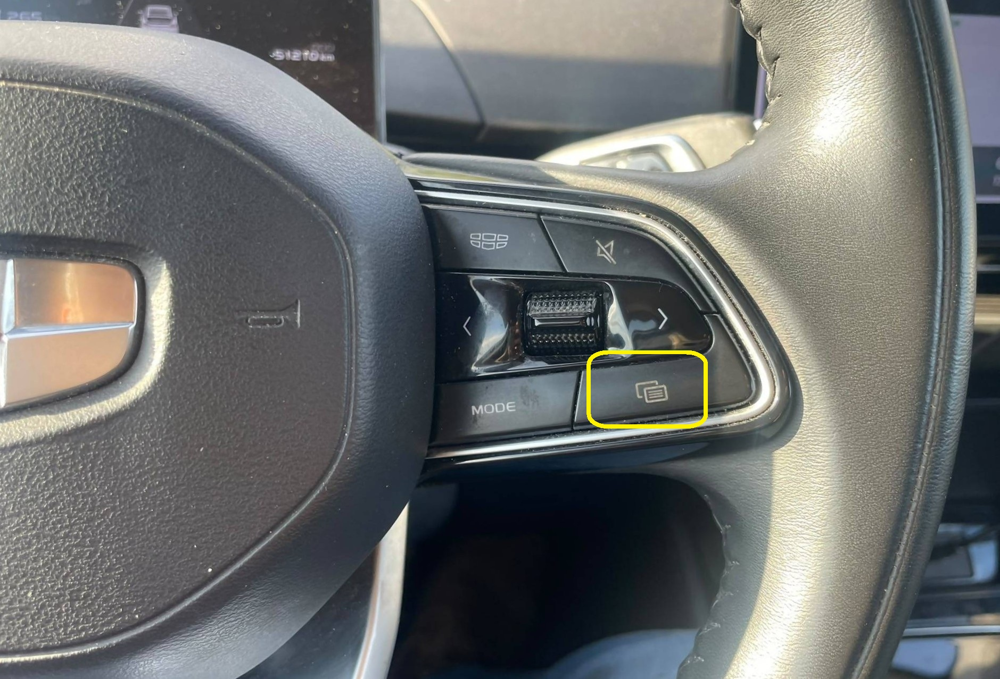
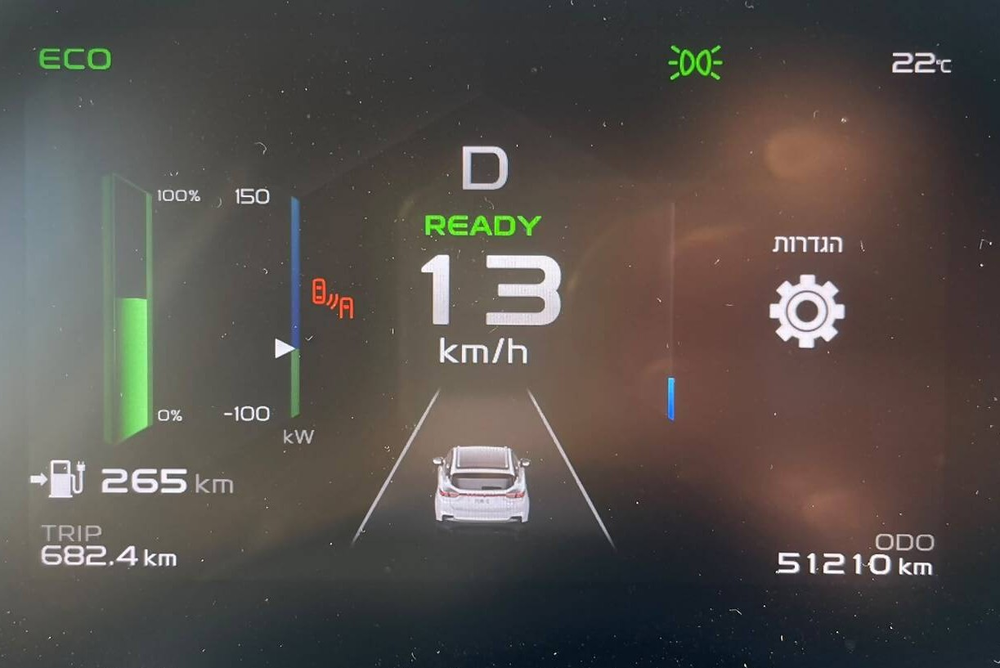
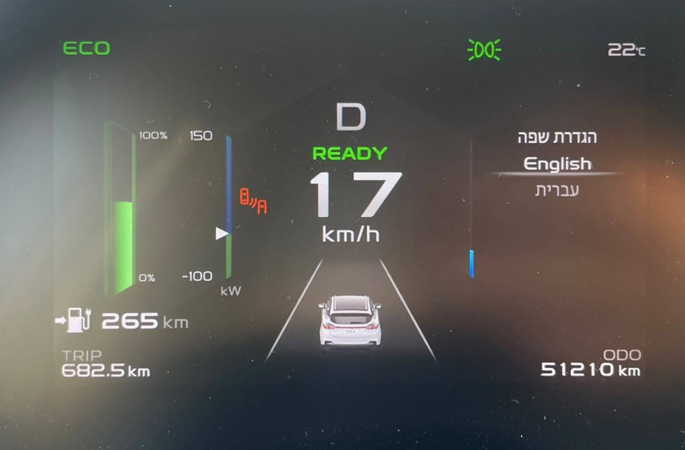
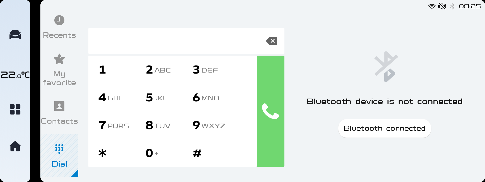
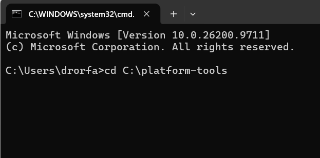
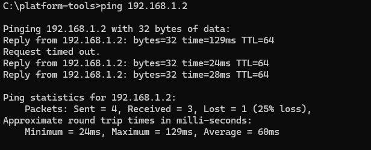

מדריך התקנת CarPlay & Android Auto
Geely Geometry C 480/360 – מדריך שלב אחר שלב להתקנת AutoKit
אזהרת אחריות ודרישות מוקדמות
הודעות קופצות והרשאות: במהלך התהליך עשויות להופיע הודעות קופצות (Pop-ups) ובקשות הרשאה — הן במסך המחשב (כגון אישור חומת אש/Firewall או אישור תקשורת ADB) והן במסך המולטימדיה ברכב (כגון אישור ניפוי באגים/USB Debugging והרשאות גישה לאפליקציה). יש לענות בחיוב, לאשר ולתת את כל ההרשאות המבוקשות בכל הודעה שתקפוץ!
ציוד נדרש והכנה מקדימה:
- דונגל CCPA מותאם (Carlinkit / CCPA).
- מחשב נייד המחובר לאותה רשת Wi-Fi (נקודה חמה/Hotspot) שאליה מחובר הרכב.
- קובצי Platform Tools וקובץ
autokit.apkשמורים במחשב.
חלק א': הכנת המחשב, הרשת והשפה
שלב 1: הכנת הקבצים במחשב
חלץ את קובצי ה-Platform Tools יחד עם הקובץ autokit.apk לתיקייה הראשית בכונן C בנתיב:
C:\platform-tools
שלב 2: חיבור לרשת משותפת
ודא כי המחשב הנייד ומערכת המולטימדיה ברכב מחוברים לאותה רשת Wi-Fi.

שלב 3: שינוי שפת המערכת ברכב לאנגלית
היכנס להגדרות הרכב במסך הנהג באמצעות שליטה בגלגל ההגה לחיצה על כפתור ההגדרות בצד ימין בהגה וניווט באמצעות כפתורי הווליום (הגדרות ⬅ הגדרות שפה) ושנה את שפת הממשק מ-עברית ל-English.
צעד זה קריטי כדי להצליח להקליד בשלבים מתקדמים במדריך.




חלק ב': הגדרות במערכת הרכב והפעלת מצב ADB
שלב 4: כניסה לתפריט הנסתר הראשון בחייגן
פתח את אפליקציית הטלפון/חייגן ברכב והקש קוד דינמי המחושב לפי הנוסחה:
#* + [חודש + 10] + [יום בחודש] + [שעה בפורמט 12 שעות]
דוגמה: בתאריך 17/03 בשעה 22:15 (10:15 בפורמט 12 שעות) — חודש (03)+10 = 13, יום = 17, שעה = 10 ⬅ הקוד יהיה #*131710.

שלב 5: איתור כתובת ה-IP של הרכב
בתפריט שנפתח, רשום בצד וזכור את כתובת ה-IP של הרכב המופיעה בטקסט הדיאגנוסטיקה משמאל (נשתמש בכתובת זו במספר שלבים בהמשך) (למשל 172.20.10.5) [מסומן בצהוב] . ולחץ על הכפתור VAVE TBOX [מסומן בירוק]

שלב 6: חשיפת התפריטים המוסתרים (LINK SLI)
בפינה השמאלית העליונה של המסך, לחץ על הסמל LINK SLI [מסומן בירוק] כ-6 פעמים ברציפות עד שיופיעו כפתורים מוסתרים נוספים.

שלב 7: הפעלת שירות ה-Shell
לחץ על הכפתור Shell[מסומן בירוק] שנחשף ברשת הכפתורים במסך ה-TBOX Tool.

שלב 8: הגדרת פורט התקשורת ADB
מחק את המלל ifconfig משורת הכתיבה בחלק העליון, הקלד בדיוק (באותיות קטנות) את הפקודה הבאה:
setprop service.adb.tcp.port 5555[מסומן בצהוב]
ולחץ על הכפתור הסגול הראשון מימין לשורת ההקלדה (发送-Send)[מסומן בירוק].
הערה חשובה: לא יופיע חיווי או אישור על המסך, הפעולה מבוצעת ברקע!

שלב 9 & 10: כניסה שנייה לחייגן והפעלת ADB
- חזור למסך החייגן ברכב והקש שוב את הקוד הדינמי השני המעודכן לפי השעה הנוכחית.
- בתפריט הדיאגנוסטיקה שנפתח, אתר בשורה השנייה מימין את הכפתור ADB模式 [מסומן בירוק] ולחץ עליו 4 פעמים ברציפות (שים לב להופעת חיווי בתחתית המסך) [מסומן בצהוב].
פתח את אפליקציית הטלפון/חייגן ברכב והקש קוד דינמי השני:
#* + [חודש + 5] + [יום בחודש] + [שעה בפורמט 12 שעות]
דוגמה: בתאריך 17/03 בשעה 21:15 (09:15 בפורמט 12 שעות) — חודש (03)+5 = 08, יום = 17, שעה = 09 ⬅ הקוד יהיה #*081709.

חלק ג': התחברות והתקנה מהמחשב (CMD)
שלב 11: פתיחת שורת הפקודות במחשב
לחץ על מקשים Windows + R, הקלד cmd ולחץ Enter.

שלב 12: ניווט לתיקיית העבודה
cd C:\platform-tools

שלב 13: בדיקת תקשורת לרכב (Ping)
בצע בדיקת חיבור לרכב (החלף את ה-IP בכתובת שרשמת בשלב 5):
ping 172.20.10.5
וודא שמתקבלות תשובות תקינות. [כמו בתמונה]

שלב 14: הגדרת תקשורת ADB ברשת
adb tcpip 5555

שלב 15: התחברות למערכת הרכב ואימות
התחבר לרכב באמצעות הפקודה (החלף בכתובת ה-IP שלך):
adb connect 172.20.10.5:5555

לאחר מכן הקלד adb devices וודא שהרכב מופיע ברשימה לצד המילה device.

Unauthorized, חזור לשלב 10 במסך הרכב ולחץ מספר פעמים נוספות על ADB模式 ואשר הודעות קופצות.

שלב 16: התקנת אפליקציית AutoKit
הרצ את פקודת ההתקנה:
adb install autokit.apk
המתנה: ההתקנה עשויה לקחת כדקה או יותר. המתן בסבלנות עד לקבלת הודעת Success.

חלק ד': אימות, הגדרות וסיומת
שלב 17: אימות ההתקנה ברכב
לחץ על כפתור האפליקציות ברכב (אייקון 4 הריבועים בסרגל הניווט השמאלי) וודא שאפליקציית AutoKit מופיעה ברשימה.

שלב 18: החזרת שפת המערכת לעברית
היכנס להגדרות הרכב (Settings ⬅ Language) ושנה חזרה את שפת הממשק לעברית.
היכנס להגדרות הרכב במסך הנהג באמצעות שליטה בגלגל ההגה לחיצה על כפתור ההגדרות בצד ימין בהגה וניווט באמצעות כפתורי הווליום (הגדרות ⬅ הגדרות שפה) ושנה את שפת הממשק מ-English ל-עברית.
שלב 19: הגדרות באפליקציית AutoKit
היכנס לאפליקציית AutoKit ⬅ לחץ על גלגל השיניים (הגדרות):
- הגדר את "הפעלה אוטומטית" על "אוטומטי".
- לפעמים האפליקציה לא תעלה באופן אוטומטי במקרים אלו יש לחזור על שלב זה
- תחת "הגדרות נוספות", הפעל את "הצגת סרגל תחתון" (מצב דלוק).
שלב 20: חיבור הדונגל והפעלת CarPlay / Android Auto
חבר את דונגל ה-CCPA לשקע ה-USB ברכב. כעבור מספר שניות תופיע הנחיה לחבר את הטלפון הסלולרי, ומיד לאחר החיבור יופיע ממשק CarPlay / Android Auto על המסך!